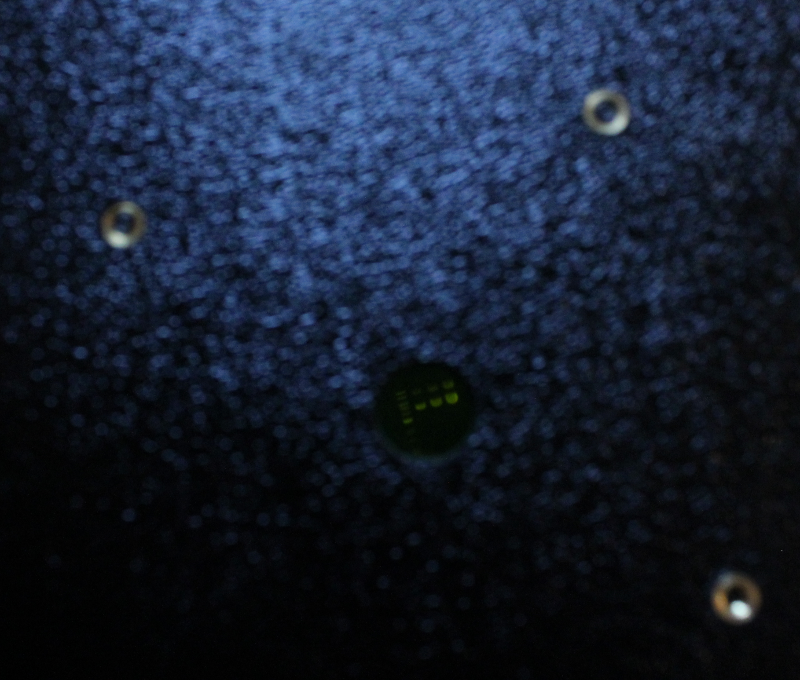
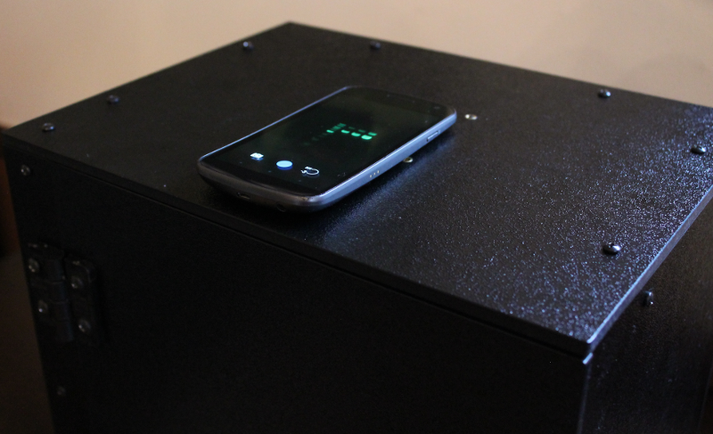
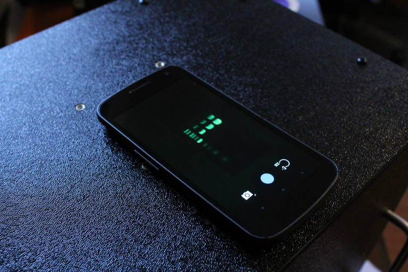
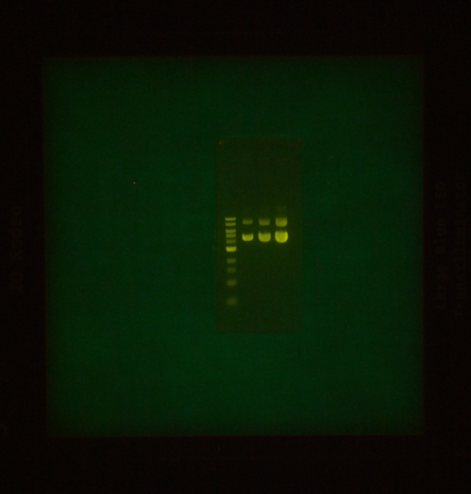

Photographing gels with DSLR camera and smartphones¶
Place a gel onto the transilluminator. This gel was stained with GreenView gel stain.

You should be able to view your gel through the amber filter that is mounted inside the enclosure. You can re-position the gel if necessary.

Mount the camera onto the enclosure using the thumbscrew. Take your images.

Here is a example image taken of this gel with the DSLR camera.

With the smartphone imaging top, the viewing window is much smaller - 12.7 mm versus 74 mm. But you can still view the gel easily through this window and do any re-positioning you need to.

Place your smartphone on the enclosure with the camera above the viewing window. Take your images.


Here is a example image taken of this gel with the smartphone camera.
